Wild plants you can forage in the United States
73 wild greens, berries, nuts, roots and flowers, with when each is in season, where it grows, how to harvest it and what to cook.
Greens
 Broadleaf plantainApr–Sep
Broadleaf plantainApr–Sep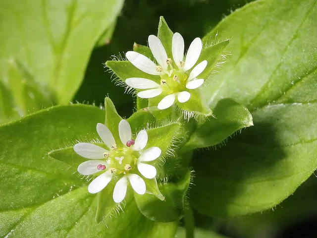
ChickweedMar–Nov Common mallowApr–Sep
Common mallowApr–Sep Curly dockMar–Jun
Curly dockMar–Jun DandelionMar–Oct
DandelionMar–Oct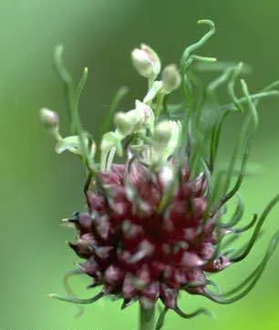
Field garlicFeb–May Garlic mustardMar–Jun
Garlic mustardMar–Jun Lamb's quartersMay–Sep
Lamb's quartersMay–Sep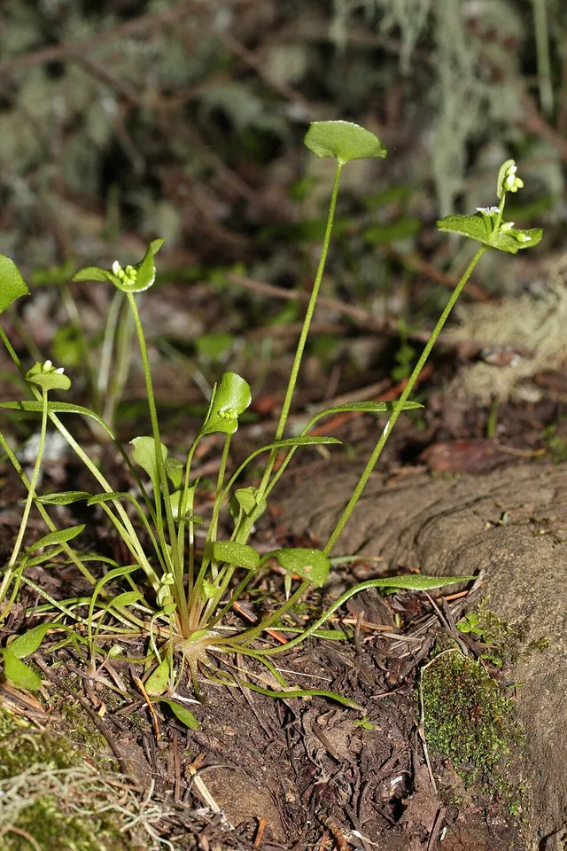
Miner's lettuceFeb–May Ostrich fern fiddleheadsApr–May
Ostrich fern fiddleheadsApr–May Purple dead nettleFeb–May
Purple dead nettleFeb–May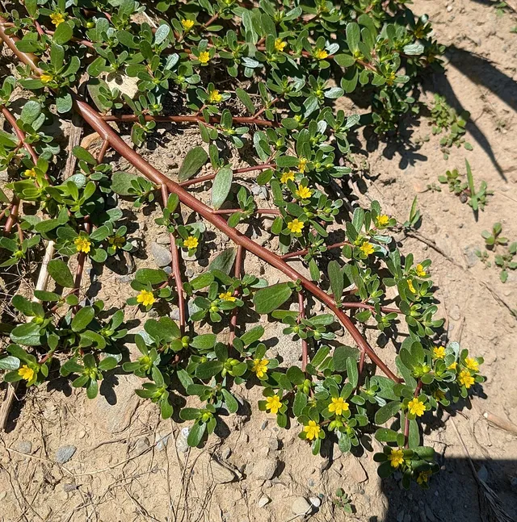
PurslaneJun–Sep RampsApr–May
RampsApr–May Sheep sorrelApr–Sep
Sheep sorrelApr–Sep Shepherd's purseFeb–May
Shepherd's purseFeb–May Spruce tipsMay–Jun
Spruce tipsMay–Jun Stinging nettleMar–Jun
Stinging nettleMar–Jun WatercressMar–Oct
WatercressMar–Oct Wild amaranthJun–Sep
Wild amaranthJun–Sep Wild onionMar–Jun
Wild onionMar–Jun Wood sorrelApr–Oct
Wood sorrelApr–Oct
Fruit & berries
 American persimmonSep–Nov
American persimmonSep–Nov Autumn oliveSep–Nov
Autumn oliveSep–Nov Black raspberryJun–Jul
Black raspberryJun–Jul BlackberryJul–Sep
BlackberryJul–Sep ChokecherryAug–Sep
ChokecherryAug–Sep CrabappleSep–Nov
CrabappleSep–Nov ElderberryAug–Sep
ElderberryAug–Sep HuckleberryJul–Sep
HuckleberryJul–Sep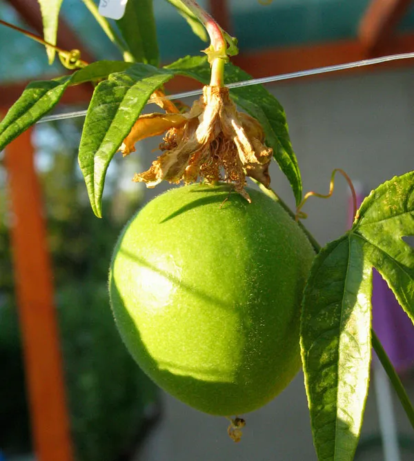
MaypopAug–Oct MulberryMay–Jul
MulberryMay–Jul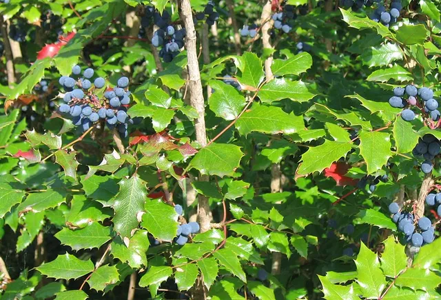
Oregon grapeJul–Sep PawpawAug–Oct
PawpawAug–Oct Prickly pearJul–Oct
Prickly pearJul–Oct Rose hipsSep–Dec
Rose hipsSep–Dec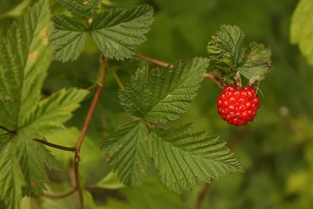
SalmonberryMay–Jul ServiceberryJun–Jul
ServiceberryJun–Jul Staghorn sumacAug–Sep
Staghorn sumacAug–Sep ThimbleberryJul–Aug
ThimbleberryJul–Aug Wild blueberryJul–Aug
Wild blueberryJul–Aug Wild cranberrySep–Oct
Wild cranberrySep–Oct Wild grapeAug–Oct
Wild grapeAug–Oct Wild plumJul–Sep
Wild plumJul–Sep Wild strawberryMay–Jul
Wild strawberryMay–Jul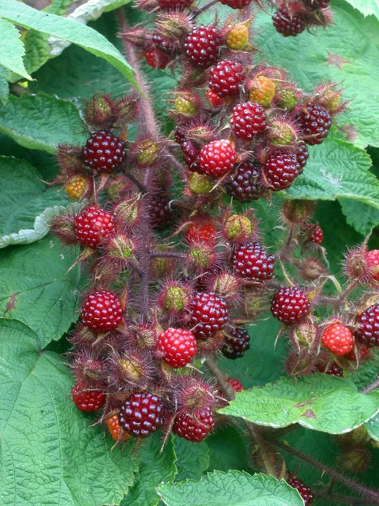
WineberryJul
Roots & shoots
 Burdock rootApr–Oct
Burdock rootApr–Oct CamasJun–Sep
CamasJun–Sep CattailApr–Jul
CattailApr–Jul ChicoryMar–Nov
ChicoryMar–Nov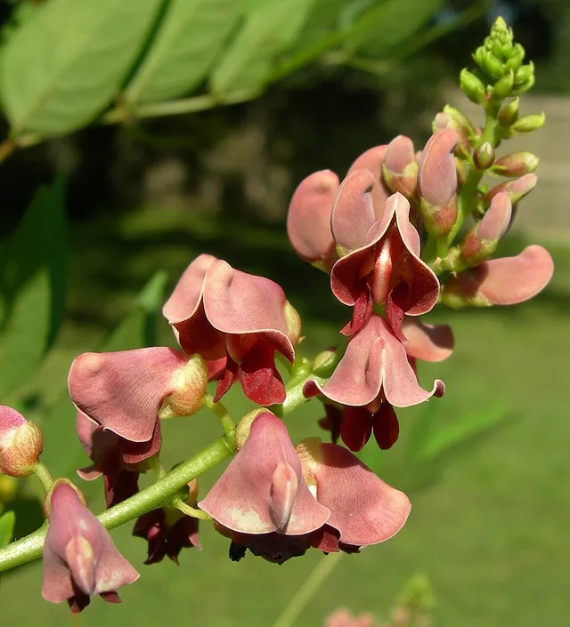
GroundnutSep–Apr Japanese knotweed shootsApr–May
Japanese knotweed shootsApr–May Jerusalem artichokeOct–Mar
Jerusalem artichokeOct–Mar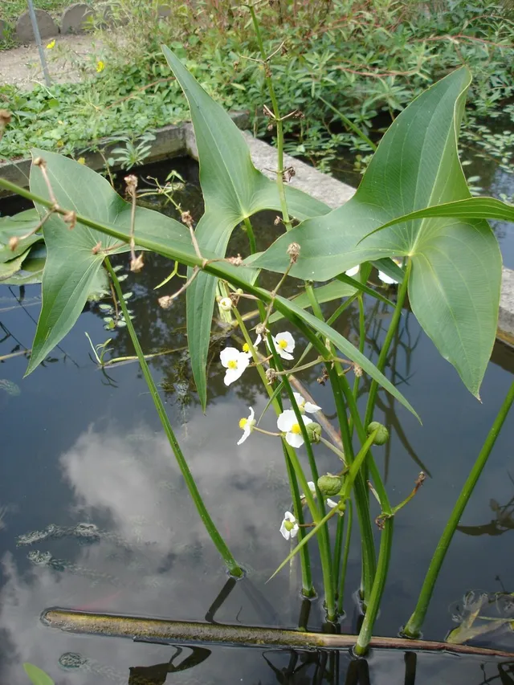
WapatoSep–Dec- Wild asparagusApr–Jun
Seeds & grains
 Mesquite podsJul–Sep
Mesquite podsJul–Sep Wild riceAug–Sep
Wild riceAug–SepSap & starch
 Maple sapFeb–Mar
Maple sapFeb–MarProtein
Nuts
 AcornsSep–Nov
AcornsSep–Nov American hazelnutAug–Sep
American hazelnutAug–Sep BeechnutSep–Oct
BeechnutSep–Oct Black walnutSep–Oct
Black walnutSep–Oct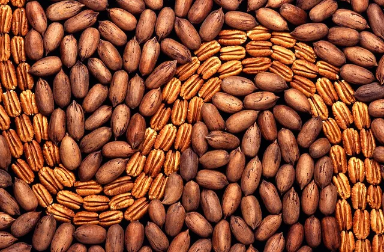
PecanOct–Nov Pinyon pine nutsSep–Oct
Pinyon pine nutsSep–Oct Shagbark hickorySep–Oct
Shagbark hickorySep–Oct
 Black locust flowersMay–Jun
Black locust flowersMay–Jun DaylilyJun–Jul
DaylilyJun–Jul ElderflowerMay–Jul
ElderflowerMay–Jul Linden flowersJun–Jul
Linden flowersJun–Jul Red cloverMay–Sep
Red cloverMay–Sep Wild bergamotJun–Aug
Wild bergamotJun–Aug